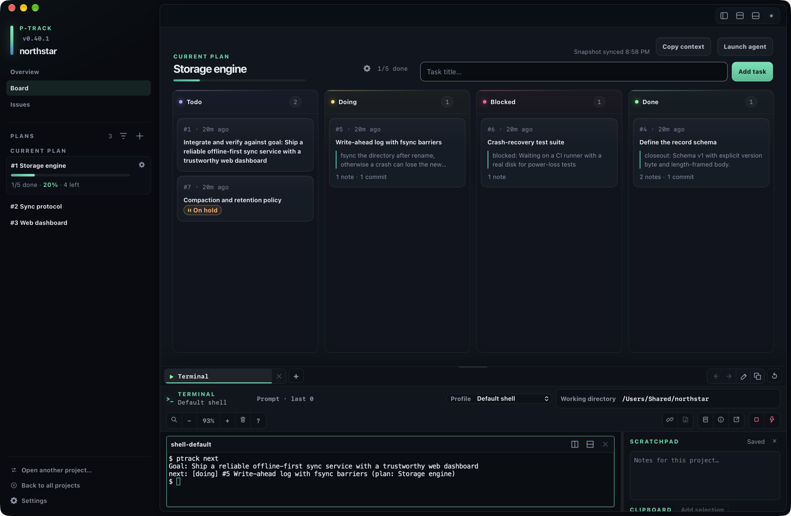
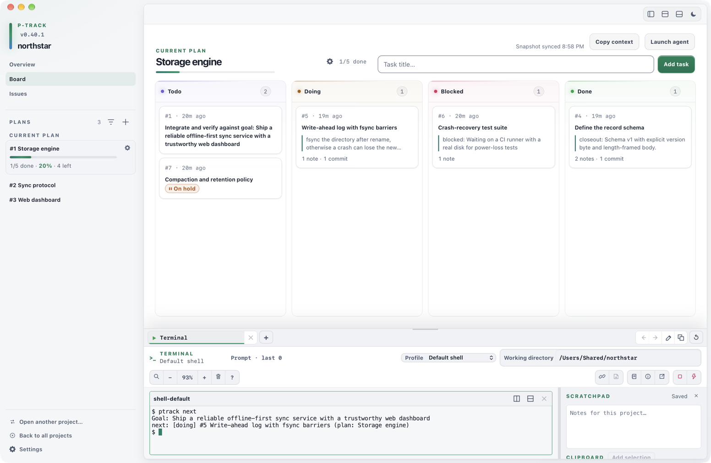

Start here
Build your first p-track workflow
Create durable project memory in a repository, make one plan active, start its first task, and leave enough context to resume in a later terminal or agent session.


The safe order is explicit. Initialize the project, add a plan, activate that plan, add a task, and then start the task. Creating a plan does not activate it.
Create your first project
Start in the repository you want p-track to remember. Replace the example path and goal with your own:
cd /path/to/your-repository
ptrack init --goal "Ship the widget service"Without an explicit --root, ptrack init uses the Git repository root when it can find one, or the current directory otherwise. It creates or refreshes the project there.
By default, initialization also installs or refreshes p-track's managed agent guide in the repository instruction files while preserving content outside its managed section. Use ptrack init --no-guide only when you intentionally do not want that guide written.
Do not bypass a nesting warning casually. p-track refuses to create a new project inside a different existing p-track project unless --force is supplied. Use that flag only when a nested project is deliberate.
After initialization, project discovery walks upward from your current directory but stops at the nearest Git boundary. Run commands inside the intended repository so p-track cannot select project state from outside that boundary.
Create and activate your first plan
A plan groups related tasks. Add one, note the numeric ID printed by the command, and activate that exact plan:
ptrack plan add "Build the storage layer"
ptrack plan use 1Replace 1 with the plan ID that ptrack plan add prints. Adding a plan does not make it active; ptrack plan use <id> is a separate, explicit step.
Desktop and CLI selection are separate. Choosing a plan in the desktop sidebar changes the board you are viewing, but it does not change the active plan used by CLI commands. Use ptrack plan use <id> when you want to change the CLI active plan.
Add and start your first task
With the plan active, add one concrete task. Note its printed ID, then start that task:
ptrack task add "Define storage buckets"
ptrack task start 1
ptrack task show 1Replace 1 with the task ID that ptrack task add prints. When task add has no --plan flag, it requires an active plan and adds the task there. To target a different plan without changing the active one, pass it explicitly:
ptrack task add "Document the storage format" --plan 2Use ptrack task show <id> to review the task and its attached context. After the work and its relevant checks are complete, mark it done explicitly:
ptrack task done 1Resume and orient
At the start of a later session, return to the repository and restore the current edge without dumping the entire project:
cd /path/to/your-repository
ptrack context
ptrack nextptrack context prints a bounded resume digest: the goal, rolling summary, active plan, blockers, open issues, recent decisions, and inventory. ptrack next identifies the single most-actionable task in the active plan.
Drill into only the selected plan or task when you need more detail:
ptrack plan show 1
ptrack task show 1These orientation commands are read-only. When you make a durable product or architectural decision during the work, attach a concise note to the relevant plan or task so the next session can recover it. When another agent or supported tool will take over, follow the cross-agent transfer workflow.
Workflow at a glance
| Step | Command | Result |
|---|---|---|
| 1 | ptrack init --goal "…" | Create or refresh project memory. |
| 2 | ptrack plan add "…" | Create a plan and print its ID. |
| 3 | ptrack plan use <id> | Make that plan active for CLI defaults. |
| 4 | ptrack task add "…" | Add a todo task to the active plan. |
| 5 | ptrack task start <id> | Move the task to doing. |
| Resume | ptrack context, then ptrack next | Restore bounded context and choose the next task. |